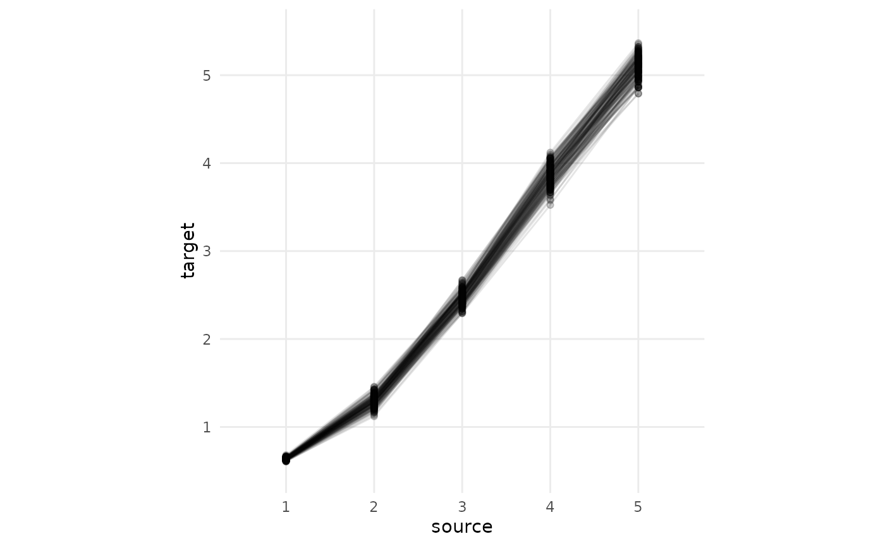
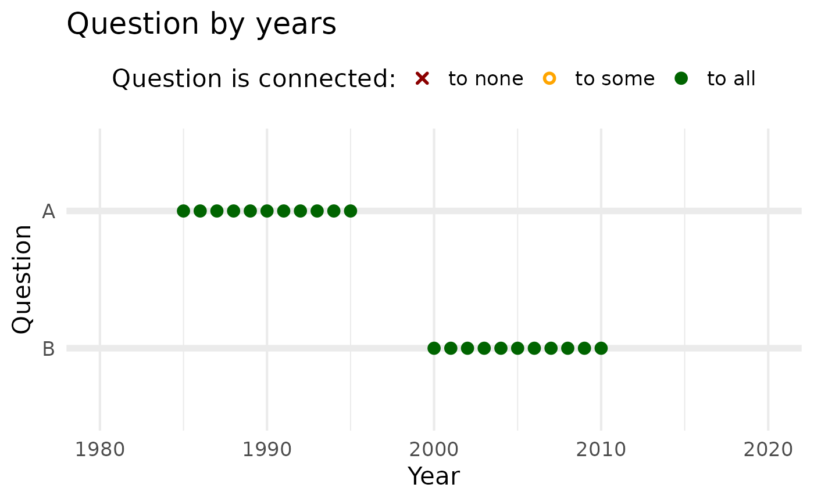
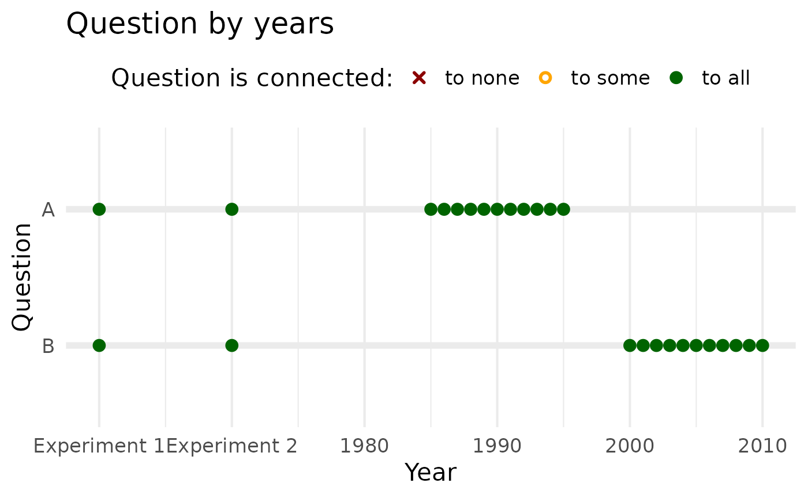

This article covers more advanced use cases as well as details of how the QuestionLink package works. You can quickly navigate to relevant topics with the table of contents on the left.
If you have not already, we suggest working through the QuestionLink tutorial first.
The code below simulates response data for four questions which all capture the same construct in a population. This process is explained in detail in the tutorial. This simulated dataset will be used in the code examples later on.
Data simulation code (click to unfold)
knitr::opts_chunk$set(warning = FALSE, message = FALSE)
# Loading necessary packages
library(dplyr)##
## Attaching package: 'dplyr'## The following objects are masked from 'package:stats':
##
## filter, lag## The following objects are masked from 'package:base':
##
## intersect, setdiff, setequal, union##
## Attaching package: 'kableExtra'## The following object is masked from 'package:dplyr':
##
## group_rows## Loading required package: viridisLite
library(ggplot2)
library(forcats)
## Installing questionlink with devtools
#devtools::install_github("https://github.com/MatRoth/questionlink")
## Installing questionlink with pak
##install.packages("pak")
#pak::pak("https://github.com/MatRoth/questionlink")
library(questionlink)
# Defining Custom functions
format_table <- function(df){
df |> kable() |>
kable_styling(position = "left",
full_width = FALSE
)
}
plot_question_years <- function(combined_df){
year_min = min(combined_df$year)
year_max = max(combined_df$year)
years_vec = c(year_min:year_max)
major_breaks_vec = years_vec[years_vec %% 5 == 0]
combined_df |>
group_by(year, question) |>
summarise() |>
ungroup() |>
arrange(question) |>
mutate(question = fct_rev(question)) |>
ggplot(aes(year, question, color = question))+
geom_point(size = 3)+
scale_x_continuous(breaks = major_breaks_vec,
minor_breaks = years_vec)+
theme_minimal(base_size = 16)+
theme(legend.position = "none")
}
# helper function that allows us to cut continuous values into ordinal chunks
cut_responses <- function(x, breaks){
ord_vec <- cut(x, c(-Inf, breaks, Inf), labels = FALSE)
return(ord_vec)
}
# ------------------
# Simulating response data for four different questions for the same construct in the same population
# ------------------
# Parameters of the simultation
## Sample size per simulated survey wave
survey_sample_n = 2000
## Response thresholds for the four simulated survey questions
response_thresholds_A <- c(-1.5, -0.5, 0.5, 1.5)
response_thresholds_B <- (response_thresholds_A - 0.5) * 1.5
response_thresholds_C <- (response_thresholds_A + 0.5) * 0.7
response_thresholds_D <- seq(-1, 2, length.out = 9)
sim_df <- tibble(
year = c(1980:2020),
# construct linearly increases over time
target_construct_mean = ((year - min(year))/ (max(year)-min(year)))-0.5,
simulated_true_score = map(target_construct_mean, ~ rnorm(survey_sample_n, .x, 1))
) |>
unnest(simulated_true_score) |>
mutate( # Cut simulated true score into ordinal responses for Questions A to D
question_A = cut_responses(simulated_true_score, response_thresholds_A),
question_B = cut_responses(simulated_true_score, response_thresholds_B),
question_C = cut_responses(simulated_true_score, response_thresholds_C),
question_D = cut_responses(simulated_true_score, response_thresholds_D)
)
# Bringing the simulated data into long format
qlink_format_df <- sim_df |>
select(year, contains("question")) |>
pivot_longer(contains("question"), values_to = "response") |>
separate(name, into = c("discard", "question")) |>
select(-discard)
# Introducing gaps in the time series for the questions
## Questions A, B, and C get survey waves in even years, D in odd years
qlink_format_df <- qlink_format_df |>
filter(!(question == "A" & year %% 2 != 0)) |>
filter(!(question == "B" & year %% 2 != 0)) |>
filter(!(question == "C" & year %% 2 != 0)) |>
filter(!(question == "D" & year %% 2 == 0))
## Defining larger gaps in time series by defining the "possible years" for each question
possible_years_lists <- list(
A = c(2000:2015),
B = c(1980:1990),
C = c(1980:2020),
D = c(1985:2005)
)
qlink_format_df <- qlink_format_df |>
mutate(
valid_year = map2_lgl(year, question, ~ .x %in% possible_years_lists[[.y]])
) |>
filter(valid_year) |>
select(-valid_year)We simulate data from 1980 to 2020 with deliberate gaps in the time series for each question so that we can showcase the purpose of QuestionLink.
plot_question_years(qlink_format_df)We also prepare a harmonization solution with QuestionLink, since we will explore the resulting object in greater detail in this article.
# Creating a ql_prepare() object with the harmonization opportunities
prepared_connections <- qlink_format_df |>
ql_prepare(
time_relaxation = 1 ,
use_relay = TRUE)
# Creating a ql_harmonize() object with the calculated harmonization solutions
harmonization_solution <- prepared_connections |>
ql_harmonize()Inverted items
When combining data from different sources with their own question versions for a concept of interest, we often encounter the issue that not all questions measure the concept in the same numerical order. Some questions represent stronger expression of the concept with higher numerical scores, while other questions are inverted in the sense that higher numerical scores mean weaker expressions of the concept.
Imagine two questions for social trust; both with 5 response options. However, in one scale “1” is the lowest level of trust and “5” is the highest level of trust. Meanwhile, in the other scale “1” is the highest level of trust and “5” is the lowest level of trust. This is an obstacle to pooling and harmonizing the data!
This issue of inverted items can stem from two different causes:
\(1\) Response scales with different directions can lead to different scale “orientations”.
For example: \[fully agree\] … \[do not agree at all\] versus \[do not agree at all\] … \[fully agree\]
\(2\) The question wording is different in relation to the concept. This is sometimes discussed as “negative” or “reversed” items.
For example: “All in all, I trust other people” versus “All in all, I do not trust other people.”
Resolving inverted items during harmonization
For the QuestionLink package, we decided to leave item inversion up
to the users beforehand. This means you need to recode items
before feeding the data into ql_prepare().
You might wonder why the package does not automate this process. This would be fairly easy to implement, but would require users to add additional meta-data on each question. Specifically, one would have to specify inverted items in a separate data structure or as another column. We thus found it best to leave this step up to users before applying the package so as not to add an unnecessary layer of complexity to the package usage.
As best practice, we would recommend inverting response scores of questions that do not match the orientation of the chosen target question. That way, scores can in the end be interpreted in line with the scale of the target question. If there are no other considerations to be made, we would also recommend choosing a target question that follows the heuristic “higher means more” or “better”. That way all analyses with the harmonized data become easier to interpret.
Inverting items is a trivial matter in R:
invert_item <- function(responses,
min_score = min(responses,na.rm=T),
max_score = max(responses,na.rm=T))
{
v <- responses
v <- (v-(min_score + max_score))*-1
return(v)
}For example for a 5-point scale:
c(1,2,3,4,5) |> invert_item()## [1] 5 4 3 2 1However, it is often better to clearly specifiy the minimum and maximum scores. That way, the function works even in data sets where respondents did not use the full scale. Consider again a 5-point scale:
#wrong:
c(2,3,4,5) |> invert_item()## [1] 5 4 3 2
#correct:
c(2,3,4,5) |> invert_item(min_score = 1, max_score = 5)## [1] 4 3 2 1Weights
Many survey programs provide weights in their scientific use files. Weights are generally provided when surveys are based on probability samples of a population. In such cases, weights are often included in analyses with the survey data to correct for some aspects of this sampling.
Design weights correct for conscious sample design decisions. In Germany, for example, some survey programs “oversample” the federal states of former East Germany. This means surveys such as the ALLBUS recruit proportionally more respondents in these states to increase the statistical resolution there. However, to avoid skewing analyses, this has to be addressed with a design weight.
Adjustment weights, meanwhile, correct for sampling issues that were not intended, such as unit non-response. Often, this involves weighting the data set so that it aligns better to the socio-demographic distribution of the target population (i.e., post-stratification).
Since QuestionLink harmonizes questions based on their frequency
distribution in a specific population, we need to apply weights to get
as close as possible to representing the “same” population. To this end,
ql_prepare() can process an additional column in the
combined data set that we feed into it.
Aside from year, question, and
response we simply add another column called
weight. In this column, we provide the weights from
different sources. We would routinely recommend using the design weight
if provided, but adding adjustment weights can also be a sound choice
depending on your field and the assumptions you are comfortable
with.
Weights in the scientific use files of survey programs can also vary in the way they are scaled. Some weights result in frequency distributions as they would have been in the total target population. However, we would recommend using rescaled weights that are standardized to the sample size of each survey wave. You can easily identify these weights by calculating the mean in each wave. Weights that are rescaled to represent the sample size should always have a mean of exactly 1.
If you want to use design and adjustment weights at the same
time, you can simply multiply the rescaled weights and enter
their product as the weight column into
ql_prepare().
Missing values and non substantive responses
In many survey data sets, we find that some response values are
missing. As mentioned earlier, when preparing data to be passed into
ql_prepare(), we remove missing values first. Such missing
values are often either actual missing responses (e.g., due to omissions
or refusals) or non-substantive responses, such as “don’t know”. In many
survey contexts, such cases are few and should not impact the quality of
the harmonization solution overly much.
Nonetheless, under certain circumstances we recommend taking a closer look:
- If there are many missing values, the issue becomes more pressing.
- If the proportion of missing values varies considerably between source surveys, it might mean that surveys differ systematically in how respondents behave.
- Sometimes, some source surveys offer non-substantive response options while others do not.
In such cases, you need to consider that QuestionLink assumes that the probability of having a missing response value is either statistically independent from the measured concept or that biases are at least the same across all data sources. Another way of looking at the same issue is this: If you could look into the heads of the missing value respondents for every question, we should find the same distribution of the true construct scores for participants with valid responses across all questions.
These issues perhaps become clearer with two practical examples.
Imagine respondents who omit answers out of embarrassment; for example if they hold an opinion they think is seen as unpopular or even immoral. That is, in itself, not yet a problem for QuestionLink as long as the same problem persists across all questions. However, now imagine that one question is more subtle while the other question is very direct. In such cases, respondents with strong beliefs might respond to one question but would omit the other. In such cases, the two underlying populations are no longer the same in terms of the distribution of true scores (i.e., what people truly believe). And this would bias the harmonization solution.
Another example are two questions where only one features a non-substantive “don’t know” option. That is in itself not a problem, as long as people who would have chosen “don’t know” pick a random substantive response option if they are forced to choose. However, if respondents choose a midpoint category as a way of expressing “don’t know” if they do not get that option, then the distributions are again biased.
If you are concerned about systematic missing values, you might
consider analyzing the pattern of missing values. For example, by
looking at the demographic distribution of responses with missing
responses. Those should be similar across data sources if missing
responses are random or the result of a similar mechanism across
sources. A potential solution for missing values is to
impute them before handing the responses over to
ql_prepare(). However, note that this only works if the
reason of missingness is reflected in other variables. In technical
terms: QuestionLink assumes that missings are completely at random
(MCAR). With careful imputation, we can mitigate this assumption down to
the less restrictive missing at random (MAR) assumption. This is the
case when responses are not missing randomly, but any systematic pattern
of missing values can be explained with other variables in the dataset.
However, even imputation cannot resolve responses that are missing not
at random (MNAR). For a quick introducution into these types of
missingness, see
Wikipedia.
Lastly, for clarification: Missing values are a problem in the
harmonization data; i.e., the data handed to ql_prepare()
to calculate the harmonization solutions. However, they are no problem
when we want to harmonize data with ql_transform() using a
previously established harmonization solution.
Ensuring data integrity with documentation meta-data
In our examples up until now, QuestionLink simply inferred the response scale of each question from the supplied data. Specifically, it infers the minimum and maximum response scale from what it finds in the pooled harmonization data. However, this can be dangerous in some cases.
One example are zeros as responses. In some cases, zeros are valid
responses, for example in 11-point scales from 0 to 10. In other cases,
zeros can be undeclared missing values, for example when response
options were omitted in a web survey. Of course, the summaries in
ql_prepare |> summary() and in
ql_prepare |> check() can reveal such issues. However,
we recommend that you clearly define each response scale minimum and
maximum for each question. This also means reviewing the documentation
of your source surveys carefully.
Once you have this information, you can easily supply it to
ql_prepare() with a list. This then informs the
ql_check() function and leads to more reliable data
validation checks.
Consider the following example. First, we delete all values of 10 from instrument “D” to corrupt our data.
corrupted_data <- qlink_format_df |>
filter(!(question == "D" & response == 10))Then we run ql_check() without providing additional
scale information:
corrupted_data |>
ql_prepare(
use_relay = TRUE,
time_relaxation = 1
) |>
ql_check()## ## ── A ✔ ──## ## ── B ✔ ──## ## ── C ✔ ──## ## ── D ✔ ──## Despite our corrupted data, we get no warning. As far as
ql_check() is concerned, question D is not a 9-point
scale.
However, if we provide the scale information, ql_check()
now spots the inconsistency!
min_max_list = list(
"A" = c(1,5),
"B" = c(1,5),
"C" = c(1,5),
"D" = c(1,10)
)
corrupted_data |>
ql_prepare(
use_relay = TRUE,
time_relaxation = 1,
scale_min_max = min_max_list
) |>
ql_check()## ── A ✔ ──## ## ── B ✔ ──## ## ── C ✔ ──## ## ── D ──## ## Issue: Not all response options between the minimum (1) and maximum (10) of D
## were used.## Year(s): 1985, 1987, 1989, 1991, 1993, 1995, 1997, 1999, 2001, 2003, 2005## Retrieving recoding tables
QuestionLink makes it unnecessary to handle recoding tables manually. However, for purposes of transparency or to document the solutions in papers it might become necessary to access the recoding tables.
To do so, we will delve manually into the output object of
ql_harmonize(). To get a quick overview that that object
type (or any other object) contains, you can use str(). We
will use the “attributes” summarized_rec_tbl and
connections_rec_tbl. You can imagine these attributes as
containers nested inside the larger object.
harmonization_solution |> str(max.level = 1)## 'questionlink' chr "questionlink_object"
## - attr(*, "connections_rec_tbl")= tibble [1,610 × 13] (S3: tbl_df/tbl/data.frame)
## - attr(*, "summarized_rec_tbl")= tibble [100 × 5] (S3: tbl_df/tbl/data.frame)
## - attr(*, "data")= tibble [92,000 × 5] (S3: tbl_df/tbl/data.frame)
## - attr(*, "population_flag")= logi FALSE
## - attr(*, "weight_flag")= logi FALSE
## - attr(*, "scale_min_max")= list()Retrieving the aggregated recoding tables
The most likely use case is that you want to access the final,
aggregated recoding table that QuestionLink has formed from all
available connections. This can be easily done by picking the recoding
information from the ql_harmonize() object. To access this,
apply |> attr("summarized_rec_tbl") to a
ql_harmonize() object. This results in a dataframe with all
recoding tables in one data frame.
# Create a ql_harmonize object:
harmonization_solution <- qlink_format_df |>
ql_prepare(
use_relay = TRUE,
time_relaxation = 1
) |>
ql_harmonize()
harmonization_solution |>
attr("summarized_rec_tbl") |>
head(10) |>
format_table()| source_question | target_question | population | source | median_equivalent |
|---|---|---|---|---|
| A | B | dummy | 1 | 1.8861928 |
| A | B | dummy | 2 | 2.8196067 |
| A | B | dummy | 3 | 3.5077829 |
| A | B | dummy | 4 | 4.2727473 |
| A | B | dummy | 5 | 4.9899307 |
| A | C | dummy | 1 | 0.6440319 |
| A | C | dummy | 2 | 1.2874516 |
| A | C | dummy | 3 | 2.4947831 |
| A | C | dummy | 4 | 3.8491165 |
| A | C | dummy | 5 | 5.1223823 |
If you want the recoding information for a specific pair of questions, simply filter that data frame:
# Looking up recodings from "A" to "C"
harmonization_solution |>
attr("summarized_rec_tbl") |>
filter(
source_question == "A",
target_question == "C"
) |>
select(-population) |>
format_table()| source_question | target_question | source | median_equivalent |
|---|---|---|---|
| A | C | 1 | 0.6440319 |
| A | C | 2 | 1.2874516 |
| A | C | 3 | 2.4947831 |
| A | C | 4 | 3.8491165 |
| A | C | 5 | 5.1223823 |
Retrieving all recoding tables that were calculated
If you will recall, QuestionLink calculates all possible equating solutions (and thus recoding tables). This means it will calculate one recoding table per found, allowed (direct, time-relaxed, or relay) connection .
Accessing these recoding tables can make sense if you want to assess the variability of the separate equatings. This can be interesting for methodological research or to identify problems with specific data sources or across time.
Specifically, ql_harmonize() objects contain a data
frame in the attribute connections_rec_tbl, which contains
all connections between the questions and for each connection the
equating solution in the form of a recoding table.
A quick look into that data frame shows that it contains a number of variables:
harmonization_solution |>
attr("connections_rec_tbl") |>
names() |>
as_tibble_col(column_name = "variable names") |>
format_table()| variable names |
|---|
| source_question |
| source_year |
| source_population |
| target_question |
| target_year |
| target_population |
| connection_type |
| relay_question |
| relay_source_year |
| relay_source_population |
| relay_target_year |
| relay_target_population |
| recoding_tables |
Let us go through these step by step. In general, all variables
describe a connection from one question to another. The last variable,
recoding_tables then gives the equating solution for that
specific connection.
- The first three variables,
source_question,source_year, &source_population, denote the source question (and its specific data source in terms of year and population); that is the question we want to harmonize. For example, the row might harmonize question “A” with data gathered in 1992 from Germany towards some other question format. - The next three variables,
target_question,target_year, &target_population, denote the target question (and its specific data source in terms of year and population); that is the question we want to use as the target scale format for our harmonization. For example, the row might harmonize the source question towards the format of question “B” with data gathered in 1992 from Germany. -
connection_typethen denotes the type of connection that was used in this connection instance to harmonize the source question towards the format of the target question. The three possible types aredirect,time_relaxation, andrelay. Of course,time_relaxation, andrelayconnections only appear in the data frame if we allowed these two types of connections during theql_prepare()stage of our harmonization. - The next five variables all detail a relay used for
harmonization and can be ignored if you are not interested in this
specifically. Of course these variables only have valid values if the
connection is of the type
relay. If you remember our data example, there were no direct or time-relaxed connections between questions “A” and “B”. Thus we harmonize “A” to “B” via the relay question “C”. In such a case, the relay variables for this connection would be filled with information on whichrelay_questionwas used (e.g., “C”), whichrelay_source_yearandrelay_source_populationinstance was used to harmonize the source question to (e.g., “A” to “C”), and lastly, whichrelay_target_yearandrelay_target_populationinstance was used to harmonize the equating solution onwards to the target question (e.g., “C” to “A”). - Last but not least,
recoding_tablescontain the equating solutions for each connection. This is where we need to get our recoding tables from.
The content of each cell in the column recoding_tables
is itself a nested table.
harmonization_solution |>
attr("connections_rec_tbl") |>
pull(recoding_tables) |>
first() |>
format_table()| source | target |
|---|---|
| 1 | 0.5095352 |
| 2 | 0.6853397 |
| 3 | 1.4916567 |
| 4 | 3.2657895 |
| 5 | 5.1397059 |
We chose this “nested” structure, because it means that we get a “one
row, one connection” data frame. For our purposes, however, we might
want to unnest() that structure so that one row is one
source question score harmonized with a specific connection.
Consider one row (omitting the relay variables for brevity):
harmonization_solution |>
attr("connections_rec_tbl") |>
select(-contains("relay")) |>
head(1) |>
format_table()| source_question | source_year | source_population | target_question | target_year | target_population | connection_type | recoding_tables |
|---|---|---|---|---|---|---|---|
| B | 1980 | dummy | C | 1980 | dummy | direct | 1.0000000, 2.0000000, 3.0000000, 4.0000000, 5.0000000, 0.5095352, 0.6853397, 1.4916567, 3.2657895, 5.1397059 |
Now observe hpw unnest() unfolds this one row into five
rows; one for each of the five possible response options of the source
question B. This also adds the columns source for the
source questions scores, and target for the harmonized
scores towards the target questions format.
harmonization_solution |>
attr("connections_rec_tbl") |>
select(-contains("relay")) |>
head(1) |>
unnest(recoding_tables) |>
format_table()| source_question | source_year | source_population | target_question | target_year | target_population | connection_type | source | target |
|---|---|---|---|---|---|---|---|---|
| B | 1980 | dummy | C | 1980 | dummy | direct | 1 | 0.5095352 |
| B | 1980 | dummy | C | 1980 | dummy | direct | 2 | 0.6853397 |
| B | 1980 | dummy | C | 1980 | dummy | direct | 3 | 1.4916567 |
| B | 1980 | dummy | C | 1980 | dummy | direct | 4 | 3.2657895 |
| B | 1980 | dummy | C | 1980 | dummy | direct | 5 | 5.1397059 |
If you are interested in the variability of equating solutions
between to questions, for example over time, you can simply
unnest() and then filter() the dataframe.
As an example, we look at all the direct connection
between “A” and “C”. The plot shows source scores of question “A” on the
x-axis and the calculated equivalents in the target format of “C” on the
y-axis. Note how there are several “target” equivalent values for each
“source” score. Specifically, one equivalent for each score per direct
connection. However, they are very similar across all those direct
connections. (This will look messier an empirical data!)
harmonization_solution |>
attr("connections_rec_tbl") |>
mutate(connection_id = row_number()) |>
filter(
source_question == "A",
target_question == "C",
connection_type == "direct"
) |>
unnest(recoding_tables) |>
ggplot(aes(source,target))+
geom_line(aes(group = connection_id), alpha = 0.5)+
geom_point(alpha = 0.5)+
theme_minimal()+
coord_fixed()+
scale_x_continuous(limits = c(0.5,5.5), breaks = c(1:5), minor_breaks = NULL)+
scale_y_continuous(limits = c(0.5,5.5), breaks = c(1:5), minor_breaks = NULL)
Now we repeat this plot, but this time with all relay
connections. We immediately see that (1) there are many more relay
connections and (2) that they are far messier. The reason is that a
relay connection performs two equating processes, one chained after the
other. This means that random measurement and sampling errors are
amplified.
harmonization_solution |>
attr("connections_rec_tbl") |>
mutate(connection_id = row_number()) |>
filter(
source_question == "A",
target_question == "C",
connection_type == "relay"
) |>
unnest(recoding_tables) |>
ggplot(aes(source,target))+
geom_line(aes(group = connection_id), alpha = 0.1)+
geom_point(alpha = 0.2)+
theme_minimal()+
coord_fixed()+
scale_x_continuous(limits = c(0.5,5.5), breaks = c(1:5), minor_breaks = NULL)+
scale_y_continuous(limits = c(0.5,5.5), breaks = c(1:5), minor_breaks = NULL)
This variability of equating solutions derived from relay connections
might seem worrying. However, if you will recall, QuestionLink does not
use these equating solutions separately. Instead, it aggregates them
into one solution by choosing the median equivalent score. Now let us do
the same and we immediately see that the median aggregated
direct connections and the median aggregated
relay connections match almost perfectly. The aggregation
over many links has mitigated the problem of randomness in measurement
and sampling.
harmonization_solution |>
attr("connections_rec_tbl") |>
filter(
source_question == "A",
target_question == "C"
) |>
unnest(recoding_tables) |>
select(connection_type, source, target) |>
group_by(connection_type, source) |>
summarise(
target = median(target)
) |>
ggplot(aes(source,target, color = connection_type))+
geom_line(aes(group = connection_type))+
geom_point()+
theme_minimal()+
coord_fixed()+
scale_x_continuous(limits = c(0.5,5.5), breaks = c(1:5), minor_breaks = NULL)+
scale_y_continuous(limits = c(0.5,5.5), breaks = c(1:5), minor_breaks = NULL)
Several Populations
Until now, we only dealt with data from a single population (e.g., the adult German population). However, we often have harmonization tasks where we have data from different populations, such as different countries. However, we cannot form an equating connection across populations. Each connection QuestionLink uses is within one population (and at the approximately same point in time). However, what QuestionLink can do is to perform its tasks population by population. This means we have to find suitable connections in every population (e.g., country), but then we can harmonize each populations’ data with recoding tables that are specific to that population.
To illustrate this feature, we are copying our simulated dataset
three times and pretend that these data were gathered from the
populations, pop_1, pop_2, and
pop_3:
multi_pop_data <- tibble(
population = c("pop_1", "pop_2", "pop_3"),
data = list(qlink_format_df, qlink_format_df, qlink_format_df)
) |>
unnest(data)The harmonization process with QuestionLink now stays exactly the
same. We do not even have to specify that we are now accessing the
multi-population mode. It is enough that our input data now has a
population column. Note how the summary() of
the ql_prepare() object now signifies the three populations
with the message “Populations found:”pop_1”, “pop_2”, and “pop_3”“.
multi_pop_harmonization_prepared <- multi_pop_data |>
ql_prepare(
use_relay = TRUE,
time_relaxation = 1
)
multi_pop_harmonization_prepared |> summary()## ## ── Summary: QuestionLink Prepare ───────────────────────────────────────────────## Current stage of the QuestionLink workflow: ql_prepare ✔ -> ql_harmonize ->
## ql_transform## ## • Number of unique question combinations: 12## ## ── Number of found connections: ──## ## • Direct connections: 84## • Time relaxation connections: 216## • Relay connections: 4530## ## ── Additional information: ──## ## • Populations found: "pop_1", "pop_2", and "pop_3"## • No weight variable was supplied.## ## ── Overview over question combinations: ──## ##
##
## Source question Target question Direct Time relaxation Relay
## ---------------- ---------------- ------- ---------------- ------
## A C 24 NA 420
## C A 24 NA 420
## B C 18 NA 420
## C B 18 NA 420
## A B NA NA 291
## A D NA 21 507
## B A NA NA 291
## B D NA 21 375
## C D NA 66 252
## D A NA 21 507
## D B NA 21 375
## D C NA 66 252## ## ── Overview over response options found: ──## ##
##
## Question Response options User supplied
## --------- ------------------------------ --------------
## A|pop_1 1, 2, 3, 4, 5 FALSE
## A|pop_2 1, 2, 3, 4, 5 FALSE
## A|pop_3 1, 2, 3, 4, 5 FALSE
## B|pop_1 1, 2, 3, 4, 5 FALSE
## B|pop_2 1, 2, 3, 4, 5 FALSE
## B|pop_3 1, 2, 3, 4, 5 FALSE
## C|pop_1 1, 2, 3, 4, 5 FALSE
## C|pop_2 1, 2, 3, 4, 5 FALSE
## C|pop_3 1, 2, 3, 4, 5 FALSE
## D|pop_1 1, 2, 3, 4, 5, 6, 7, 8, 9, 10 FALSE
## D|pop_2 1, 2, 3, 4, 5, 6, 7, 8, 9, 10 FALSE
## D|pop_3 1, 2, 3, 4, 5, 6, 7, 8, 9, 10 FALSEWe can also look at the connections plot for each population, simply
by calling plot() on the ql_prepare()
object:
multi_pop_harmonization_prepared |> plot(combine_population_plots = FALSE)## [[1]]##
## [[2]]##
## [[3]]We can then harmonize the entire, multi-population data frame by
calling ql_harmonize() and ql_transform():
multi_pop_harmonization_prepared |>
ql_harmonize() |>
ql_transform(
target_question = "A"
) |>
head() |>
format_table()| population | year | question | response | weight | target_question | median_equivalent |
|---|---|---|---|---|---|---|
| pop_1 | 1980 | B | 3 | 1 | A | 2.278887 |
| pop_1 | 1980 | C | 2 | 1 | A | 2.662703 |
| pop_1 | 1980 | B | 3 | 1 | A | 2.278887 |
| pop_1 | 1980 | C | 2 | 1 | A | 2.662703 |
| pop_1 | 1980 | B | 3 | 1 | A | 2.278887 |
| pop_1 | 1980 | C | 1 | 1 | A | 1.702287 |
What happens under the hood is that QuestionLink performs all steps
for each population, one after the other. If we look at the summarized
recoding tables in the ql_harmonize() object, we see that
we get a recoding table for each question combination, in both
directions, for each population. Note that with count() we
condense the recoding tables down to one line per recoding table,
arriving at 48 recoding tables (and rows): 4 instruments * 4 instruments
* 3 populations = 48.
multi_pop_harmonization_prepared |>
ql_harmonize() |>
attr("summarized_rec_tbl") |>
count(source_question, target_question, population)## # A tibble: 48 × 4
## source_question target_question population n
## <chr> <chr> <chr> <int>
## 1 A A pop_1 5
## 2 A A pop_2 5
## 3 A A pop_3 5
## 4 A B pop_1 5
## 5 A B pop_2 5
## 6 A B pop_3 5
## 7 A C pop_1 5
## 8 A C pop_2 5
## 9 A C pop_3 5
## 10 A D pop_1 5
## # ℹ 38 more rowsLastly, what happens if we cannot find links for some questions in some populations? As an example, we delete question A from the harmonization data in population 1. In such cases QuestionLink makes its inability to harmonize some values transparent. Specifically, it details which scores of which instrument in which population were not harmonized.
multi_pop_research_data <- multi_pop_data |>
transmute(population,
source_question = question,
response)
multi_pop_harmonization_data_incomplete <- multi_pop_data |>
filter(!(population == "pop_1" & question == "A"))
multi_pop_harmonization_data_incomplete |>
ql_prepare(
use_relay = TRUE,
time_relaxation = 1
) |>
ql_harmonize() |>
ql_transform(
target_question = "A",
new_data = multi_pop_research_data
) -> incomplete_solutionIf we look at some examples for question A, we see that QuestionLink has harmonized responses to question A in population 2 and 3. In population 1, however, it has added NA values to indicate that no harmonization solution was possible.
incomplete_solution |>
filter(source_question == "A" | target_question == "A") |>
group_by(population) |>
summarise(across(everything(), first)) |>
format_table()| population | source_question | response | target_question | median_equivalent |
|---|---|---|---|---|
| pop_1 | A | 2 | NA | NA |
| pop_2 | B | 3 | A | 2.278887 |
| pop_3 | B | 3 | A | 2.278887 |
Overcoming gaps in harmonization data
The structure of QuestionLink is optimal for making use of existing random samples of one (or more) populations collected by survey programs over longer time series. However, in some cases there are simply questions which cannot be harmonized with others with that approach. Here we want to address some possible ways of overcoming such limitations.
Choosing the right target question
Often, the choice of target question (i.e., to which question’s format to harmonize) is up to convenience. However, there are edge cases where the choice of target question determines how many other questions we can harmonize towards it.
Consider the following case:
chain_limit_prep <- tibble(
question = c("A", "B", "C", "D") |> rev(),
year = list(
c(1980:1990) +5,
c(1980:1990) +12,
c(1980:1990) +19,
c(1980:1990) +26
)
) |> unnest(year) |>
mutate(response = 1) |>
ql_prepare(use_relay = TRUE, time_relaxation = 0)
chain_limit_prep |>
plot()We immediately see that we can only directly harmonize temporally adjacent questions:
A to B
B to A and C
C to B and D
D to C
However, we can use relays. Yet since relay (i.e., chained) equatings incur amplifying random errors, QuestionLink limits relays to only one jump. This means we cannot reach D from A or vice versa.
However, both B and C can reach all other questions:
B has direct connections to A and C and a relay to D (via C)
C has direct connections to B and D and a relay to A (via B)
Looking into the connection attribute of the
ql_prepare() object, we can easily verify this with a bit
of data wrangling:
number_of_questions <- chain_limit_prep |>
attr("data") |>
dplyr::pull(question) |>
unique() |>
length()
question_connections_table <- chain_limit_prep |>
attr("connection") |>
dplyr::select(source_question, target_question) |>
dplyr::distinct() |>
dplyr::arrange(source_question) |>
dplyr::group_by(source_question) |>
dplyr::count() |>
dplyr::mutate(
pct_link = 100 * n / (number_of_questions -1),
question_connections = dplyr::case_when(
pct_link == 0 ~ "no links",
pct_link == 100 ~ "links to all",
pct_link > 0 & pct_link < 100 ~ "links to some"
),
question_connections = factor(
question_connections,
levels = c("no links", "links to some", "links to all")
)
) |>
dplyr::select(question = source_question, question_connections)
chain_limit_prep |>
attr("data") |>
dplyr::group_by(year, question) |>
dplyr::summarise() |>
dplyr::arrange(year, question) |>
dplyr::full_join(question_connections_table)## # A tibble: 44 × 3
## # Groups: year [32]
## year question question_connections
## <dbl> <chr> <fct>
## 1 1985 D links to some
## 2 1986 D links to some
## 3 1987 D links to some
## 4 1988 D links to some
## 5 1989 D links to some
## 6 1990 D links to some
## 7 1991 D links to some
## 8 1992 C links to all
## 9 1992 D links to some
## 10 1993 C links to all
## # ℹ 34 more rowsCutting intersecting samples down to size
Sometimes the issue is that we do have random samples for two questions, but the target population is not a perfect match. However, as long as there is some overlap (i.e., intersection) between the target populations of the data sources, we might still make do.
Examples for such situations include:
Surveys which cover only a sub-population of the general population of a country, such as samples of the employed population, samples of migrants, or samples of women.
Surveys might also cover different age ranges.
Surveys might cover different regions, such as covering some but not all federal states.
In all these cases, we might still harmonize two questions of their respective samples have an intersection of sufficient size. All we have to do is to exclude cases from one or both samples so that their remaining populations match.
For example, if we want to harmonize a sample of people in retirement with a sample of the general population, we might exclude all non-pensioners from the general sample and then match both of them for harmonization. Or imagine a sample of adult women and a sample of only employed people. We might exclude all unemployed respondents from the first and all non-female people from the second sample to match them.
However, please note that this might lead to small remaining sample sizes, which increases the random error of each equating solution. This is, of course, less of an issue if there are many such connections (e.g., when there are many waves to harmonize).
Conducting split-half experiments
Sometimes, there are simply no existing data to form a connection between two questions. In such cases, we might consider collecting data ourselves to bridge the missing connection(s). Of course it is seldom feasible to collect random samples like the larger survey programs do. However, if you will recall, the random groups design is traditionally a split-half experiment. And our requirement for random samples was just to be able to harmonize across survey programs. In a split-half experiment, we get the “same population” requirement for free. This means we can resort to cheaper sampling methods, such as non-probability samples.
There are some aspects that we should consider, however:
Sample size is key! Unlike other connections, we only get one connection between two questions here. After all, we do this only when there are no other connections. This means that the higher our sample size, the better we can mitigate the random error of equating. (As a rule of thumb: N >= 2000.)
This not only affects the quality of harmonizing the two questions in the experiment. Depending on the other questions and the data availability, QuestionLink might route relay connections through our split-half experiment data, using it as a relay. This means its randomness is then injected into other harmonizations as well.
We should strive to at least ensure socio-demographic variety via quotas. This does not make our data “representative” of the general population, of course. However, the harmonization solution will be more comparable, if we avoid a very homogenous sample; for example with mostly highly educated respondents.
Lastly, note that we assume that both questions work the same way in our non-probability sample as they do in the general population, which we discuss more in the section Population invariance. Just for clarification: We do not mean that we get the same response distribution as in the general population. We mean that respondents should understand the question in the same way (in the formal sense of measurement invariance).
Adding split-half experiments to QuestionLink
Adding split-half experimental data to QuestionLink to bridge missing connections is easily done, but the process might seem counter-intuitive at first. It might be best to look at the practical process and then to try and understand why it works the way it does.
Adding split-half experimental data works like this:
- Bring the experimental data into a long format, just like we
normally do with data for QuestionLink. At this stage, we have a
questionand aresponsecolumn, with the respective Question (i.e., condition in the split-half experiment) and the individual response scores. - Next, we fill the
yearcolumn. This step is crucial! We have to choose years that are outside the range of the years from the random sample surveys. Otherwise, QuestionLink might equate one of our non-probability experimental conditions with a random sample of one of the surveys. You can choose any arbitrary year that is far enough away from the others so that it does not trigger the time-relaxation range. However, it might perhaps be best to clearly demarcate experimental data. You might choose years from previous or future centuries or even negative years. - If you have different populations (e.g., countries), then we
recommend using experimental data only for the population it was
collected in. Thus enter that population’s id into the
populationcolumn. - If the random sample data sources use weights, add a
weightcolumn to your experimental data, where every row has the value1. - Lastly, add the experimental data as additional rows to your other
harmonization data (e.g., with
add_row()or a join). Then proceed as normal with the QuestionLink R-package.
The reason for this peculiar structure with imaginary data collection years is that we want to fold experimental data into the QuestionLink connection routing. However, we also need to avoid that QuestionLink forms connections between the general population and our experimental sample(s).
A last issue is that this process might lead to less readable and
perhaps confusing connection plots if we apply plot() to
the ql_prepare() object.
However, this can be resolved with a bit of ggplot()
magic.
If you simply want to omit all experimental datapoints from the plot,
then you can use the limits argument in
ggplot::scale_x_continuous(). This way you can define the
minimum and maximum number of years to display. If you choose only the
range of the random sample surveys, the experiments are not
displayed.
# Experimental years dummy data:
experimental_years_data <- tibble(
question = c("A", "B") |> rev(),
year = list(
c(-10, c(1980:1990) +5),
c(-10, c(1980:1990) +20)
)
) |> unnest(year) |>
mutate(response = 1) |>
ql_prepare(use_relay = TRUE, time_relaxation = 0) If we add negative year numbers to our data, the plot()
becomes unreadable:
# Without limits
experimental_years_data |>
plot()However, if we exclude the experimental years, then it works as normal:
# With limits
experimental_years_data |>
plot()+
scale_x_continuous(limits = c(1980, 2020))
If you want to clearly designate specific “years” as experiments, you
can proceed as follows. Here we set two imaginary experiments to 1960
and 1970, a bit away from the earliest random sample data from 1980.
Then we define labels for our experiments and supply those labels inside
scale_x_continuous() as a custom ~ lambda
function with ifelse().
# Experimental years dummy data:
experimental_years_data_2 <- tibble(
question = c("A", "B") |> rev(),
year = list(
c(1960, 1970, c(1980:1990) +5),
c(1960, 1970, c(1980:1990) +20)
)
) |> unnest(year) |>
mutate(response = 1) |>
ql_prepare(use_relay = TRUE, time_relaxation = 0)
# define experiment "years"
experiment_labels <- c(
"1960" = "Experiment 1",
"1970" = "Experiment 2"
)
# plot
experimental_years_data_2 |>
plot()+
scale_x_continuous(
labels = ~ifelse(.x %in% labels(experiment_labels),
experiment_labels[as.character(.x)],
.x))
Population invariance
One last issue is less technical, but rather a methodological limitation of observed score equating. The issue of population invariance becomes relevant when we want to apply the recoding tables derived from harmonization data to other data which was measured with the same questions. In simple terms, population invariance holds if an equating solution derived from random groups data in one population is the same as the equating solution we would get from random groups data in another population.
If this were the case, then we can equate in one population and can apply the recoding tables directly in the other population. However, such population invariance is not guaranteed when applying observed score equating algorithms. In formal terms, we only get population invariance across two populations if both questions are measurement invariant across the two populations. In intuitive terms, this means we only get population invariance if the questions are understood and respondent to in the same way in two populations.
The problem is, of course, that we do not know if single-item questions are measurement invariant. This is because all conventional methods to assessing measurement invariance require multiple indicators such as several items for one construct. As a concrete example, think of multi group confirmatory factor analyses, which require several items per factor.
Now in pragmatic terms, we can relegate this issue to assumptions. Every harmonization project must make some assumptions about spearate and joint data quality and this might just add another such assumption. In fact, we routinely make this assumption when analyzing single-source data in the social sciences. If we asked men and women in Germany how interested they were in politics, and found a higher average score for men, most researchers would say men are more interested in politics. This means social scientists routinely assume measurement invariance; here between male and female respondents.
The way QuestionLink is set up, it assumes population invariance
within each population defined with a unique population id.
It also assumes that population invariance between such groups is
violated and (chained) equating across populations is not desirable.
This way, users can make their own decisions. Up until now, we used
countries as population examples. However, you can also distinguish
subpopulations. In data from one country, you might define “women” and
“men” as ids in population. Then you would get separate
recoding tables which would also be used separately to other data.
Apart from which data to use for deriving the recoding tables, the issue of population invariance also governs which other data we can apply the recoding tables to. Imagine deriving recoding tables from surveys of the general adult population in a country. Can you then use the resulting recoding table to harmonize survey data collected in a sample of teenagers? Well, you can if you feel confident that those teenagers understand and treat the question similarly to adults.
Sometimes, we can also try to vet our population invariance
assumption empirically. Specifically, we can check for
population invariance when we have random groups data from both
populations. Then we can define these populations with a
population id and apply QuestionLink. If we get very
similar recoding tables in both (or more) populations, then this
supports the population invariance assumption.